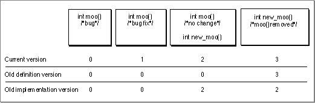
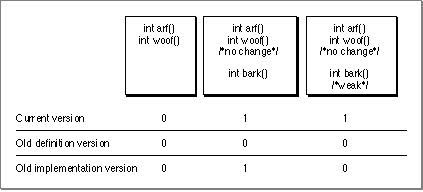

Use PEF Version Numbering
The Code Fragment Manager relies on version numbers stored in the import library PEF containers to determine whether an implementation library is compatible with the definition stub library. The developer can assign version numbers as a redundancy check for possible library mismatches during a library's development. As shown in the example that follows, there are some cases that this method does not solve. This section gives several examples of when and how to change these version numbers when developing import libraries.When using PEF versioning, the developer should use the following rules:
- The first library should have all three version numbers set to zero.
- The current version number can be incremented each time the developer releases a change to the library.
- The old definition version number should be incremented only if the developer changes the library's API in a manner that makes the library incompatible with older clients (for example, removing a routine that older clients expect to see).
- The old implementation number should be incremented only if the developer makes additions to the API that new clients must depend on (for example, adding a routine that all new clients will require).
Figure 3-2 shows the version numbers required for each update of a library
- IMPORTANT
- The version numbers encoded in an import library are for developer use only. The library compatibility version numbers do not need to correspond to the version numbers visible to the end user.
mooLibthat contains the functionmoo.Figure 3-2 Changes to import library version numbers

When you first build the library, you do not have to worry about compatibility, so all the version numbers are set to 0.
Now, suppose you find a minor bug in the function
mooin your first version. After fixing the bug, you create version 1. Fragments built with version 0 can run on machines that contain version 1 without having to be updated, because the two versions ofmooare compatible. Similarly, fragments built with version 1 can still run on machines that contain version 0 (even though it contains a bug). Therefore, the old implementation and old definition numbers remain at 0 while the current version number is raised to 1.Now, suppose you update the library again to add a different implementation of function
moo, callednew_moo. The definition and implementation for functionmooremain the same. This version becomes version 2 of the import library. Fragments built with either of the older versions still run on machines that have version 2 because they won't look for the functionnew_moo. However, fragments built with version 2 cannot run on machines containing older versions of the library because they cannot find an implementation for functionnew_moo. Therefore, version 2 ofmooLibhas an old definition version of 0 and an old implementation version of 2.Finally, you remove function
moo, so that onlynew_moois supported, and build version 3 of the import library. Fragments built with older versions of the import library won't run with version 3 because they expectmooto be present. However, fragments built with version 3 run on machines that contain any version that has an implementation fornew_moo(in this case, version 2 or version 3). Therefore, version 3 ofmooLibshould have a old definition version of 3 and an old implementation version of 2.A drawback of simple PEF versioning is that if a compatible implementation library is not found, the program fails. Although this result is the same as using no versioning at all, PEF versioning can also prevent incompatible usage in cases where the symbols have not changed. In addition, PEF versioning acts as a redundancy check for possible library mismatches during development. Note that even when a compatible library is found, the client fragment cannot determine which version of the library was actually used.
In addition, each version number can represent only a single compatibility range. Depending on how the developer changes the library, it is possible to have pockets of compatibility appear in older versions that cannot be represented by the version numbers. As a trivial example, say you create a version 4 of
mooLibthat restores the functionmoo. Fragments built with version 4 cannot run with version 3 because version 3 does not containmoo; the old definition version number must be 4. However, this choice also disqualifies version 2, which does containmooand would be a compatible library.In some cases, the developer can increase the compatibility ranges by designating weak symbols in addition to PEF versioning. For example, say you have a library
dogLibwith the functionswoofandarf. Normally, if you add a new functionbarktodogLib, you must increase the current and old implementation version numbers as in the previous example. However, if the fragment that imports fromdogLibdeclaresbarkto be weak, you have a little more flexibility. For example, if version 0 is the originaldogLiband version 1 contains thebarkfunction, the following are true:Therefore, if
- A client fragment built with version 0 of
dogLibcan run with either version 0 or version 1, since it neither knows about nor usesbark.- A client fragment built with version 1 of
dogLibcan run with either version 0 or version 1 if the client declaresbarkto be weak. (Note that the client fragment must check for the presence ofbarkand use it only if it is available.)barkis weak, version 1 ofdogLibcan have both its old definition and old implementation version numbers set to 0. Figure 3-3 shows the version numbers for both variations ofbark.Figure 3-3 Version numbering with weak imports
